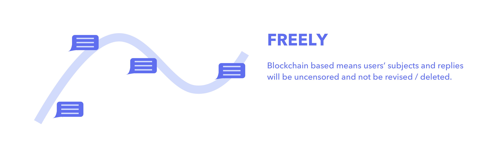

OVERVIEW
This is a project marks the beginning of my freelance designer career. Thanks Haoqian Zhang for inviting me to join this project! I’m the only designer in this project and finished designing iOS App and website. Right now we have finished version 1.0 and just submitted our app to iOS App Store.
The target for this project to use decentralization to provide safe and free online communication, and also complete transparency for users’ posts and comments.
PROBLEM SPACE
Online forum is a place aims for safe and open discussion where users can reflect and express what they care about in their daily lives. Right now, most websites store all users’ data in a centered place, which is easy to be censored or filtered. So it happens when government will censor content that is “controversial”.
Instead of storing data in a centered place, could we decentralize users’ data (including posts, comments or every actions that will be recorded) that make sure it cannot be filtered or deleted and provide a complete transparent online environment?
SOLUTION
Advantages of blockchain based forum compared with traditional forums

Apart from advantages, is there any challenges?
Biggest Challenge - Complicated Username
As decentralized means system cannot use compare logic for creating a username, users can only be recognized by a random generated long string instead of a prefered username. So how can user login? Traditionally, users need to remember the long string of public address or scan a paper QR code for private key. But is there any other solutions?
Our Solution
Support users store private key and public address to iCloud. And everytime users try to login, app will automatically get data from icloud.

BEFORE
AFTER
Challenge 2 - Huge effort of “like” function
As blockchain can only add content instead of revising later, system cannot change the number of how many people ‘like’ the post but add a new ‘like’ action to database. So the implementation effort of “like” function is pretty high. So besides how many ‘replies’ posts have, is there any other features that can prioritize posts?
Our Solution
FINAL DESIGN
Key Features